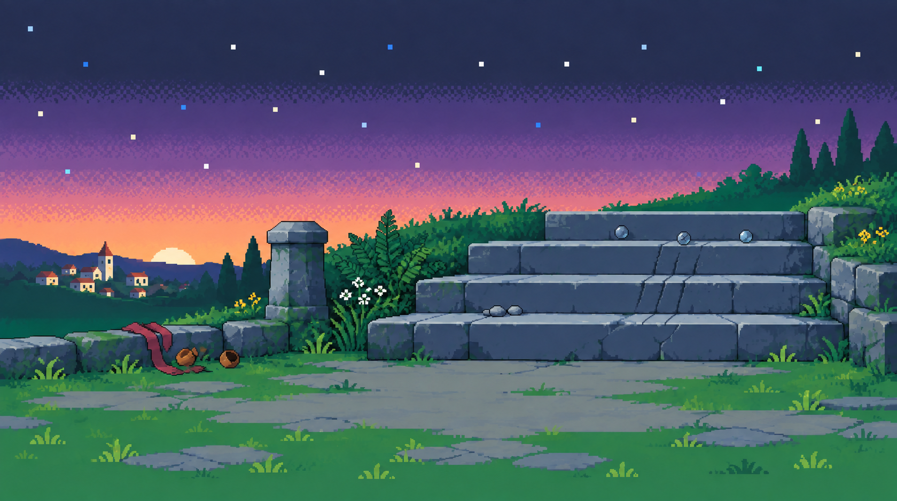

언덕에서 마을로
돌계단 · 잔치 광장 · 연못. 같은 마을을 잇는 배경 세 장입니다.
언덕 돌계단
새벽

그림 속 글자와 조사 내용은 게임에서 표시합니다. 증거 표시와 다람은 미리보기에서만 겹쳐 보이며 PNG에는 들어 있지 않습니다.
개발 전달 자료
그림·증거 좌표 전달 문서 · 파일 규격과 좌표 JSON
360×200 게임 화면에 맞춰 가운데를 9:5로 잘라 표시합니다. 생성 원본을 보존한 도트 스타일 시안이며, 정확한 26색·공통 픽셀 격자는 별도 제작 단계입니다.